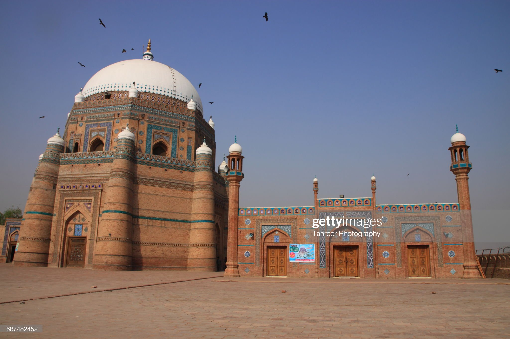

unjab is one of the four provinces of Pakistan. Located in central-eastern region of the country, Punjab is the second-largest province of Pakistan by land ...
Lahore is the second biggest city in Pakistan. It is the capital of the province of Punjab. It is also known as the 'City of Gardens' because of its many parks and gardens. This city is known for its rich culture and lively atmosphere.


Islamabad is a well-organized city divided into different sectors and zones. It was ranked as a Gamma world city in 2008. The area of Islamabad is 906 square kilometres (350 sq mi). A further 2,717 square kilometres (1,049 sq mi) area is known as the Specified Area, with the Margala Hills in the north and northeast.

Multan is a city in Punjab, Pakistan, on the bank of the Chenab River. Multan is Pakistan's seventh largest city as per the 2017 census, and the major ...
